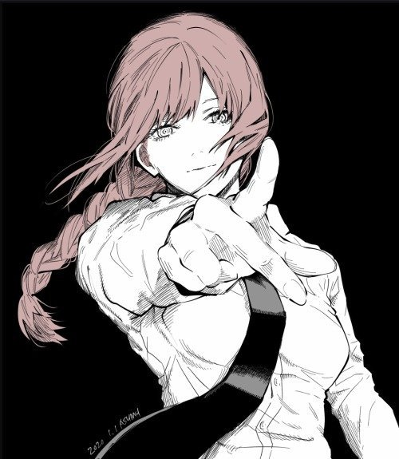

شخصيات رجل المنشار
العودة
دنجي (デンジ)
بطل القصة الرئيسي، شاب فقير يندمج مع شيطان المنشار ليصبح صياد شياطين.

ماكيما (マキマ)
قائدة منظمة صيادي الشياطين، شخصية غامضة ذات قدرات خارقة.

باور (パワー)
شيطان الدم التي تتصرف بأنانية ولكنها تصبح صديقة مقربة لدنجي.

أكي هايازاوا (早川アキ)
صياد شياطين جاد ومسؤول، يصبح شريك دنجي وباور.